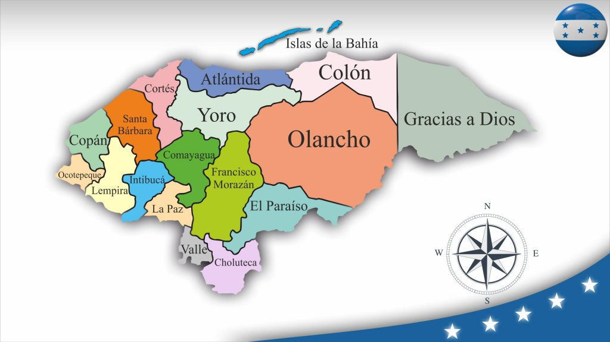
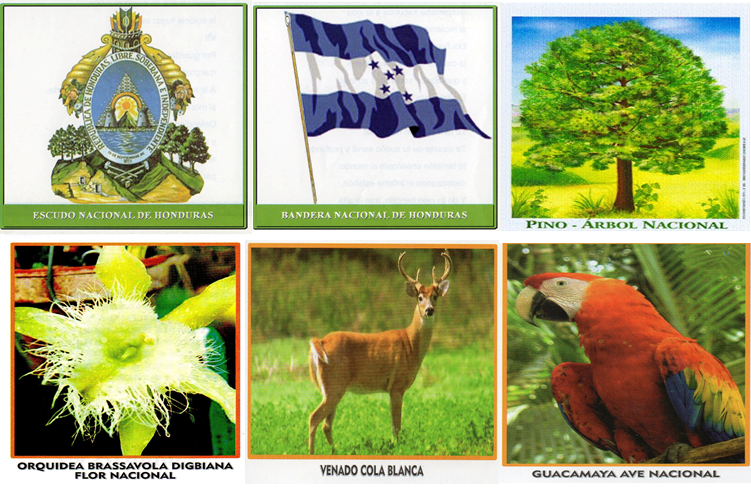
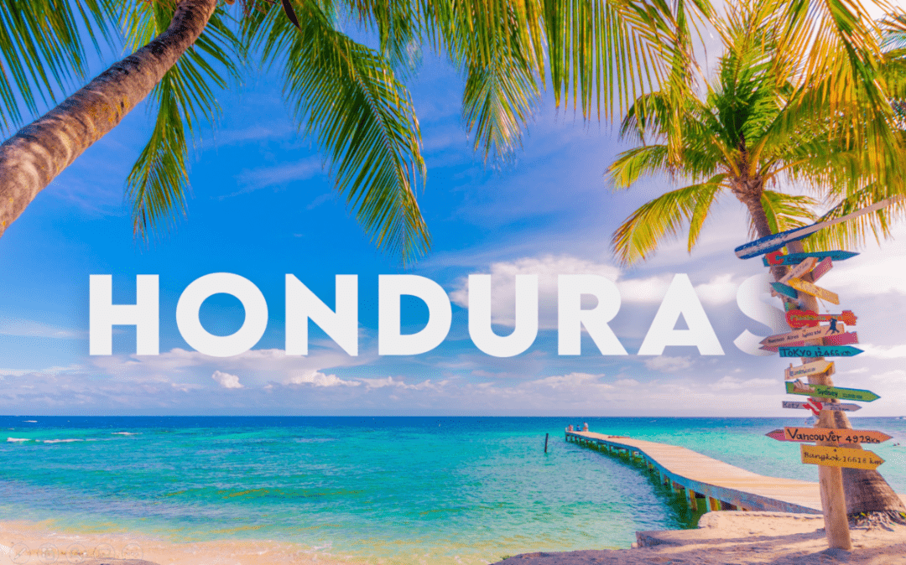

Honduras es un estado unitario y se autodefine como libre, soberano e independiente. Limita al norte y este con el mar Caribe, al sureste con Nicaragua, al sur con el golfo de Fonseca y El Salvador, y al oeste con Guatemala, en cuanto a los límites marítimos colinda con México, Belice, Cuba, Islas Caimán, Guatemala, Jamaica, Colombia, Nicaragua, y El Salvador. La extensión territorial de Honduras, comprendiendo todas sus islas, es de 112 492 km2.
-

Departamentos de Honduras
1. Francisco Morazán
2. Atlántida
3. Choluteca
4. Colón
5. Comayagua
6. Copán
7. Cortés
8. El Paraíso
9. Gracias a Dios
10. Intibucá
11. Islas de la Bahía
12. La Paz
13. Lempira
14. Ocotepeque
15. Olancho
16. Santa Bárbara
17. Valle
18. Yoro
Historia de Honduras
El territorio que corresponde a la actual Honduras fue hogar de la civilización maya durante el primer milenio de nuestra era, como lo testimonian las ruinas de Copán. Fue invadido después por los Aztecas y a continuación por los Mosquitos.
En 1502, la región fue descubierta por Cristóbal Colón. La población indígena fue entonces diezmada por la conquista española y por las enfermedades que trajeron los colonos. Sin embargo, muy pronto los pueblos se mezclaron y los mestizos llegaron a ser el grupo étnico dominante de Honduras.
En 1523, Hernán Cortés, en el curso de una expedición punitiva contra soldados rebeldes, comenzó la conquista del territorio. El descubrimiento de oro en el país fue, sin embargo, el origen de intrigas y conflictos durante varios años. Fue el lugarteniente de Cortés en Guatemala, Pedro de Alvarado, quien venció finalmente a todos sus rivales, en 1539.
En 1540, los españoles hicieron de Comayagua la capital de su colonia. Otras comunidades españolas se instalaron en los valles de Honduras donde permanecieron muy aisladas.
Al final del período colonial, la mayor parte de Honduras era una provincia poco poblada, unida a la capitanería general de Guatemala, bajo administración española, y donde la mayoría de los habitantes se dedicaban a la agricultura o a la ganadería para subsistencia. El país, después de haber provisto esencialmente metales, procuró grandes cantidades de productos alimentarios y ganado a las regiones exportadoras de índigo de El Salvador y Guatemala.
De 1821 a 1823, la región integró el imperio mexicano de Iturbide, antes de ser incorporada a las Provincias Unidas de América Central, entre 1824 y 1838.
Independiente en 1838, Honduras perteneció, entre 1842 y 1844, a una confederación que agrupaba El Salvador y Nicaragua, e hizo de Francisco Morazán su primer presidente. Guatemala y otros paises vecinos más poderosos ejercieron, sin embargo, una gran influencia en la política de Honduras a lo largo de todo el siglo XIX. De 1840 hasta los años 70, el país fue frecuentemente dirigido por dictaduras conservadoras. Las elecciones tenían poca significación y las revoluciones fueron frecuentes.
A fines del siglo XIX y comienzos del XX, el estado fue dominado por dictadores liberales, como Marcos A. Soto, en 1876.
En el transcurso del siglo XX, la importancia creciente de las plantaciones de bananeros pusieron al país bajo la dominación de las compañías fruteras norteamericanas, tales como United, Standard y Cuyamel. La United Fruit Company compró Cuyamel, en 1929, e hizo de Honduras una "república bananera". Aún cuando ellas contribuyeron poco al desarrollo general del país, las compañías fruteras le dieron un producto de exportación mayor, desarrollaron las zonas portuarias del Caribe e hicieron, indirectamente, de San Pedro Sula, una zona de población importante.
En 1933, Tiburcio Carías Andino, sostenido por la United Fruit Company, llegó al poder y ejerció una dictadura enérgica hasta 1948. Juan Manuel Gálvez le sucedió y emprendió la modernización del país. Su política engendró una huelga general de los obreros de las plantaciones bananeras, en 1954. Esta huelga marcó la decadencia de la influencia de la United Fruit. Fue bajo la presidencia de Gálvez que Honduras adhirió a la Organización de los Estados de América Central.
En 1954, un régimen democrático fue puesto en marcha y el liberal Ramón Villeda Morales llegó a la presidencia de la República. Hizo adherir al país al Mercado Común Centro-Americano (MCCA) y lanzó programas en favor de una reforma agraria y de la educación. En 1963, su discutida política, asociada a la aprehensión provocada por la suba del comunismo en Cuba, desembocó en un golpe de estado, conducido por el coronel Osvaldo López Arellano.
A fines de los años 70 y en los años 80, el problema central de Honduras fue la inestabilidad política que reinaba en los paises vecinos. En 1980, Paz García firmó entonces un tratado de paz con El Salvador.
En las elecciones de noviembre de 1981, el candidato del Partido liberal, Roberto Suazo Córdova, consigue la presidencia, marcando el retorno de los civiles al poder. Los militares, sin embargo, guardaron una influencia considerable. Honduras se volvió una base para los guerilleros que luchaban contra el gobierno de Nicaragua, y los Estados Unidos emprendieron entonces una serie de ejercicios militares, a fin de ejercer una presión suplementaria sobre el gobierno sandinista.
En 1985, José Simón Azcona Hoyo fue elegido presidente. Fue reemplazado por Rafael Leonardo Callejas, en 1989. Su gobierno estuvo colmado de huelgas, mientras que trataba de hacer lo posible con una situación económica desastrosa.
En 1993, Carlos Roberto Reina obtuvo la elección presidencial frente a Callejas. Reina entró en el camino de las reformas económicas y las medidas de austeridad.
Símbolos Patrios
-

Bandera
La Bandera Nacional de Honduras es un rectángulo cuya longitud mide el doble de su anchura. Está dividida en tres fajas horizontales, de las mismas dimensiones. La del centro es color blanco, y las de los extremos de color azul turquesa.
Sobre la faja blanca y en un rectángulo central, se encuentran cinco estrellas de cinco picos cada una. Cuatro de ellas ocupan las esquinas de rectángulo y la quinta, el centro. Es condición que uno de los picos de las cinco estrellas mire hacia arriba.
Escudo
Un triángulo equilátero colocado en un terreno que bañan dos mares. En la base del triángulo, un volcán entre dos castillos, sobre los cuales se levanta el arco iris.
Bajo del arco iris, tras el volcán, un sol que esparce abundantes luces, y alrededor del triángulo, un óvalo donde se lee, en letras de oro mayúsculas: REPÚBLICA de HONDURAS, LIBRE SOBERANA E INDEPENDIENTE. En su parte baja, en letras del mismo color pero de menor tamaño: 15 de SEPTIEMBRE 1821.
En el área superior del óvalo, una aljaba llena de flechas, en la que penden dos cuernos de la abundancia, unidos con un lazo y vueltos hacia abajo. Una cordillera de montañas en donde descuellan tres árboles de roble a la derecha y tres pinos a la izquierda, abajo las minas, una barra, un barreno, una cuña una almádana y un martillo. Cada uno de estos elementos tiene un especial significado, el triángulo equilátero indica que todos los hondureños son iguales ante la ley, en derechos y deberes, el volcán es uno de los que figuran en el Escudo de la Federación de Centro América.
Los castillos son el baluarte indígena ante cuyos muros se estrellaron los ímpetus del conquistador el arco iris simboliza la paz, la unión y los ideales en la familia hondureña. En el sol naciente están representados la fuerza y el vigor de los seres y de las cosas que hay en la naturaleza del país.
Los dos mares son el Atlántico y el Pacífico, anchas rutas por donde los hondureños se comunican con los países civilizados. Es el óvalo a manera de urna en donde está guardado el recuerdo de la fecha de independencia de Centro América.
La aljaba de flechas significa el entusiasmo guerrero de los naturales del país, los cuernos de la abundancia simbolizan la riqueza vegetal de la tierra hondureña, susceptible de una explotación cada vez mayor, en la cordillera de montañas está representado el terreno del país, por todas partes erizado de alturas.
Los robles y los pinos representan la selva y la montaña de Honduras, con abundancia de maderas preciosas. El Roble es la fortaleza del indio; el pino, la aspiración del alma hacia las alturas, y, por último las minas, que indican la ingente riqueza del subsuelo hondureño y las herramientas invitan al trabajo que da independencia económica.
Ave Nacional (La Guara Roja o Guacamaya Roja)
El hermoso plumaje de esta ave hondureña es conocido por el color amarillo que representa al sol y el intenso azul que representa al cielo. La Guara o Guacamaya Roja, fue declarada como Ave nacional de honduras el 28 de junio de 1993.
Árbol Nacional (Pino)
El pino Amarillo, pino avellano (Pinus oocarpa) es un árbol nativo del Nuevo Mundo. El Pino fue elegido por el gobierno del entonces presidente Miguel Paz Barahona, quién mediante acuerdo No. 429 emitido el 14 de mayo de 1928 resolvió declarar el Pino como Árbol Nacional de Honduras.
Flor Nacional (Orquidea)
La Orquídea (Rhyncholaelia digbyana) fue declarada Flor Nacional de Honduras el 25 de noviembre de 1969. Esta orquídea, conocida como «orquídea de la Virgen», es la flor nacional de Honduras, debido a sus características excepcionales de belleza, vigor y distinción.
Venado Cola Blanca
El 28 de Junio de 1993, bajo decreto No. 36 el Soberano Congreso Nacional de Honduras declaró al Venado Cola Blanca (Odocoileus Virginianus) como uno de los Simbolos Nacionales de Honduras ya que representa la fauna del pais junto con la Guacamaya o Guara Roja, que es el Ave Nacional de Honduras.
Himno Nacional de Honduras
LETRA
Coro:
Tu bandera, tu bandera
es un lampo de cielo
por un bloque, por un bloque
de nieve cruzado;
y se ven en su fondo sagrado
cinco estrellas de pálido azul;
en tu emblema, que un mar rumoroso
con sus ondas bravías escuda,
de un volcán, tras la cima desnuda,
hay un astro de nítida Luz.
I
India virgen y hermosa dormías
de tus mares al canto sonoro,
cuando echada en tus cuencas de oro
el audaz navegante te halló;
y al mirar tu belleza extasiado
al influjo ideal de tu encanto
la orla azul de tu espléndido manto
con su beso de amor consagró.
[Coro]
II
De un país donde el sol se levanta,
más allá del atlante azulado,
aquel hombre te había soñado
y en tu busca a la mar se lanzó.
Cuando erguiste la pálida frente,
en la viva ansiedad de tu anhelo,
bajo el dombo gentil de tu cielo,
ya flotaba un extraño pendón.
[Coro]
III
Era inútil que el indio, tu amado,
se aprestara a la lucha con ira,
porque envuelto en su sangre Lempira
en la noche profunda se hundió.
Y de la épica hazaña en memoria,
la leyenda tan solo ha guardado
de un Sepulcro el lugar ignorado
y el severo perfil de un peñón.
[Coro]
IV
Por tres siglos tus hijos oyeron
el mandato imperioso del amo,
por tres siglos tu inútil reclamo
en la atmósfera azul se perdió.
Pero un día de gloria tu oído
percibió, poderoso, y distante
que allá lejos por sobre el Atlante
indignado rugía un león.
[Coro]
V
Era Francia, la libre, la heroica
que en sus sueño de siglos dormida
despertaba iracunda a la vida
al reclamo viril de Dantón.
Era Francia que enviaba la muerte
la cabeza del rey consagrado
y que alzaba soberbia a su lado
el altar de la diosa razón.
[Coro]
VI
Tú también, ¡oh mi patria! te alzaste
de tu sueño servil y profundo;
tú también enseñaste al mundo
destrozando el infame eslabón.
Y en tu suelo bendito tras la alta
cabellera del monte salvaje
como un ave de negro plumaje,
la colonia fugaz se perdió.
[Coro]
VII
Por guardar ese emblema divino
marcharemos, ¡oh patria! A la muerte,
generosa será nuestra suerte,
si morimos pensando en tu amor.
Defendiendo tu santa bandera
y en tus pliegues gloriosos cubiertos
serán muchos, Honduras, tus muertos
pero todos caerán con honor.
[Coro]
¿Quieres visitar Honduras? Te dejamos una guía de turismo en la que puedes consultar la amplia gama de lugares que puedes conocer.
Has clic aquí.
-
